Как включить и посмотреть статистику в Инстаграм

- ТОП-3 сервисов просмотра полной статистики
- Как подключить статистику в Инстаграме*
- Общая статистика аккаунта
- Статистика отдельной публикации
- Смотрим показатели Сторис
- Геометки и хештеги
- Статистика подписчиков
- Аналитика Reels в Инстаграме*
- Статистика взаимодействий
- Сохранили и отправили в сообщении
- С главной страницы и с профиля
- Почему недоступна статистика в Инстаграме*
Посмотреть статистику в Инстаграме* возможно после подключения бизнес-функций или профиля «Автора». В аналитике доступна информация по последним взаимодействиям с контентом, проценту охваченных аккаунтов и целевой аудитории.
ТОП-3 сервисов просмотра полной статистики
В список наиболее используемых для просмотра статистики в Инстаграме*, входят:
| instahero | Отображение аналитических данных, мониторинг страницы. Пользователь может настроить наблюдение за своим профилем, посмотреть тип аудитории. |
| trendhero | Сервис, который показывает ER (уровень вовлеченности аудитории). С его помощью можно повысить уровень взаимодействий; |
| НЕ РЕКОМЕНДУЕМ, ЕСТЬ ЖАЛОБЫ |
С помощью instahero можно настроить продвижение страницы и посмотреть аналитику профиля. В основном, сервис направлен на удаление ботов и фейков, а также запуск накрутки. Но наблюдение за статистикой необходимо, чтобы сравнить показатели до запуска приложения и после. Из преимуществ то, что instahero доступен для мобильных устройств, а проверка выполняется в фоновом режиме. TrendHero выполняет задачи, направленные на улучшение безопасности профиля и мониторинг за аналитикой. То есть, владелец профиля сможет отследить, какое количество подписчиков оформили подписку, какие публикации понравились. Дополнительно, можно посмотреть данные по отдельным записям, которые размещены в блоге. Instaplus на данный момент под вашу ответственность, были жалобы от пользователей.
Как подключить статистику в Инстаграме*
Посмотреть статистику в Инстаграме* на Андроиде и Айфоне возможно с помощью функции: «Изменить тип профиля». Владелец блога может подключить формат «Автор» или «Бизнес», чтобы посмотреть статистику профиля или воспользоваться сторонними сервисами, чтобы провести комплексную аналитику. Как включить бизнес или статус «Автор»:
- Зайти в Инстаграм* — Настройки.
- Аккаунт — Сменить тип профиля.

- Указать подходящий формат.
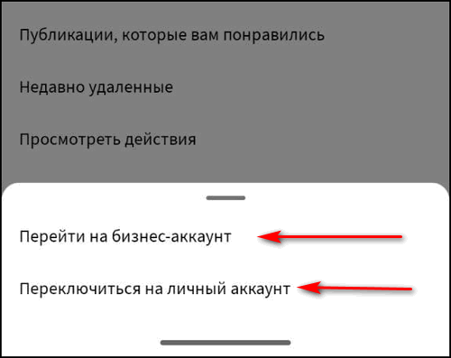
- Выбрать категорию — Сохранить.
Теперь в настройках появятся новые пункты, как «Статистика», «Продвижение», «Брендированный контент» и прочее.
Статистика есть по двум разделам: о профиле в целом и отдельным публикациям. При достижении 100 подписчиков можно посмотреть аналитику по целевой аудитории: до этого показателя доступен только ограниченный функционал.
Общая статистика аккаунта
Чтобы посмотреть все данные о своей странице, нужно воспользоваться тем же разделом, где размещены «Настройки». Как воспользоваться:
- Зайти в Инстаграм* — нажать по трем полоскам сверху.
- Выбрать: «Статистика» — пролистать все разделы.
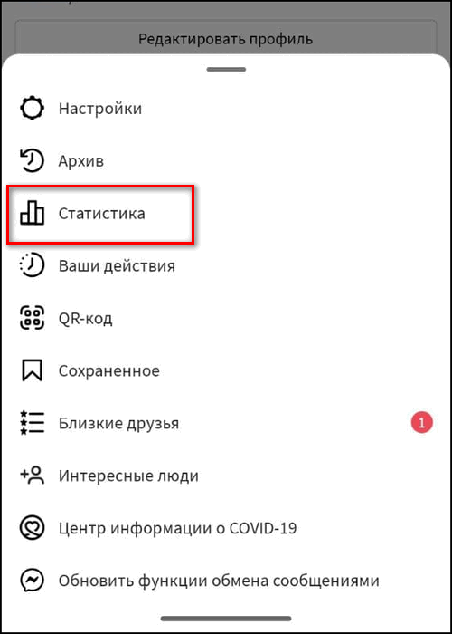
Далее, владелец аккаунта может ознакомиться с каждым пунктом отдельно: Вовлечённые профили, Подписчики и́ их количество, популярные публикации. В общей статистике выведены данные, которые отображают усреднённые показатели по каждому пункту. К примеру, в разделе «Охваченнве аккаунты» есть информация о каждом отдельной публикации. С помощью аналитики можно узнать, сколько пользователей было привлечено, из каких категорий переходят чаще всего. В соответствии с этим, можно подкорректировать хештеги и геометки, сделать их эффективнее.
Статистика отдельной публикации
Под каждой записью расположена кнопка: «Статистика», где можно посмотреть уровень взаимодействия с публикацией. Информация появляется спустя несколько минут, после размещения записи. Что видно в статистике Инстаграма*:
- охват. Какое количество пользователей увидели запись;
- хештеги и геотеги. Эффективность примененных меток;
- сохранения, сколько поделились в Директе;
- лайки и комментарии;
- посещения из профиля, Ленты.
Аналитика для публикаций в Ленте и Историях разная. К примеру, по публикациям доступна на протяжении всего времени, пока запись находится на странице. Относительно Историй: только первые 24 часа. После – посмотреть общие данные, как количество просмотров и охват, возможно через статистику Историй в общем разделе.
Как посмотреть:
- Зайти в свой профиль – выбрать недавно опубликованную запись.
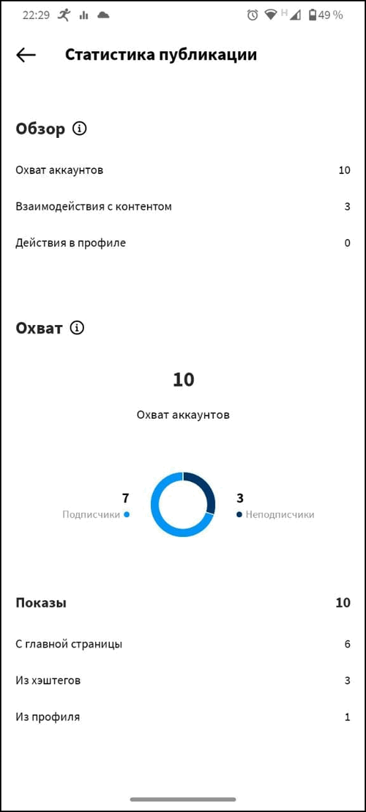
- Нажать снизу: «Статистика».
Или же, воспользоваться разделом в «Настройках» и посмотреть по выбранной записи. Инстаграм* также отображает ТОП последних постов, опубликованных за последнюю неделю.
Смотрим показатели Сторис
Посмотреть статистику Истории в Инстаграме* возможно двумя способами:
- нажать под временной публикацией по значку: «Зрители»;
- через общую статистику.
Если запись была опубликована недавно, то доступны статистические данные в Сторис. После – можно посмотреть только в общей статистике или через Архив. Показатели статистики в Инстаграме*:
- Зайти в профиль – нажать по аватарке.
- Снизу нажать по значку в виде «глаза».
- Символ «диаграммы» - посмотреть статистику.
Чтобы посмотреть данные всех Историй, которые были опубликованы за последнее время:
- Зайти в Инстаграм* – Настройки.
- Статистика – Вовлеченность.
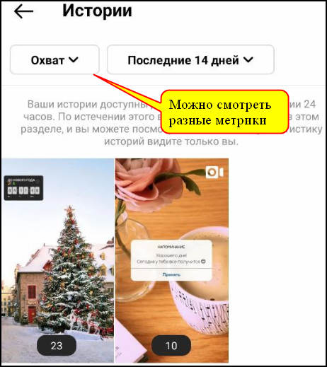
- Взаимодействия с историей.
- Так же можно смотреть и другие разделы статистики Сторис.
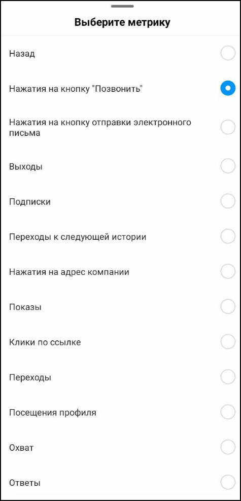
- Жмем по кнопке, выбираем период и смотрим статистику.
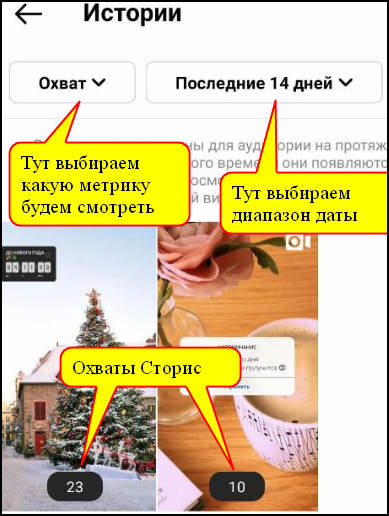
Ниже расположена вкладка: «ТОП новостей», где показаны последние данные по просмотру Историй. С помощью Архива публикаций можно посмотреть когда были размещены посты.
Геометки и хештеги
Хештеги – это небольшой запрос, который можно указать в описании публикации. Он влияет на продвижение и зависит от частоты употребления.
К примеру, если один тег упоминают до 10 раз в секунду, то продвигать публикацию по нему не имеет смысла. Записи быстро сменяются и потенциальная аудитория не успеет прочитать, посмотреть или даже заметить.
Геометки – это те же хештеги, но по запросам местоположения. То есть, пользователь сверху над постом указывает, где была выполнена съемка. Посмотреть хештеги и геометки в статистике:
- Перейти в выбранную публикацию – нажать: «Статистика»
- Посмотреть, какие пункты продвижения выделены.
- Перейти к разделу: «Хештеги» и «Местоположение».
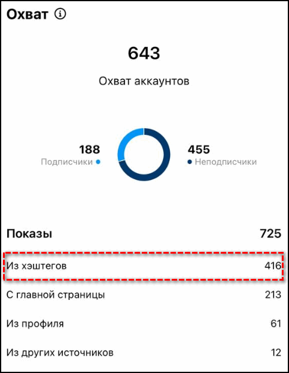
Если под публикацией эти категории не обозначены, значит пользователь неверно выбрал теги или те вовсе заблокированы. Под каждую тематику блога нужно составлять отдельный список хештегов, которые будут употреблены под постами. Местоположение напротив, нужно указывать соответствующее реальным данным. В особенности, если блог предлагает услуги в определенном городе или стране. Для личных целей можно использовать любые популярные геометки, которые могут привлечь внимание аудитории.
Статистика подписчиков
Отдельный раздел в – подписки. Сведения об аудитории отображаются после того, как владелец профиля достигнет показателя в 100 подписчиков. В этой категории доступны данные о том, какое количество фанатов оформили подписку, отписались. Есть вариант отписаться от невзаимных подписок, которые решили за вами больше не следить. Отдельно есть графа с географическим положением аудитории, сведениями по половой принадлежности, возраст и дни активности. Чтобы посмотреть данные по аудитории:
- Зайти в Инстаграм* – нажать по «Статистика».
- Всего подписчиков.
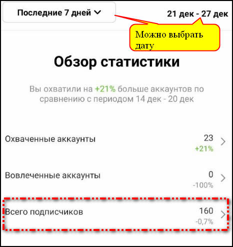
- Посмотреть информацию по фанатам.
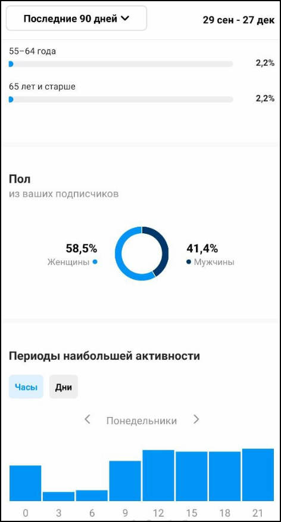
Или же, воспользоваться сторонними сервисами, которые открывают доступ к полномасштабной аналитике:
- Зайти в InstaHero.
- Подключить учетную запись из Инстаграма*.
- Анализ – подождать, пока сервис проведет первую операцию.
- Посмотреть информацию по подписчикам.
С помощью вкладки «Мониторинг» можно настроить постоянное отслеживание за действиями подписчиков. Например, когда они активны в течение дня или по времени суток.
Аналитика Reels в Инстаграме*
Помимо данных о публикациях, Историях, есть статистика для нового раздела Reels. Как и в остальных вкладках, есть данные о количестве просмотров, охватах, комментариях и лайках.
- В профиле выбрать раздел: «Статистика».
- Перейти в подраздел: «Вовлеченность».
- ТОП Reels – посмотреть данные о постах.
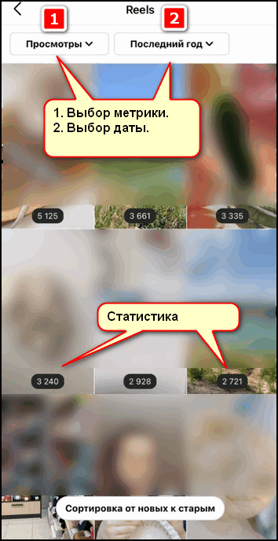
- находим нужный Рилс;
- жмем по кнопке «Статистика».
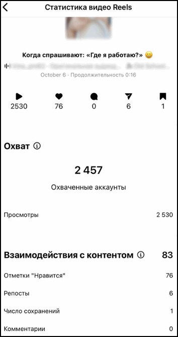
Среди доступных метрик: Охват, Сохранения, Поделились в Истории или сообщении, Комментарии и просмотры. В графе: «Вовлеченность» показаны все недавно опубликованные записи, которые добавил пользователь за последнюю неделю. Первой появится запись, которая стала наиболее популярна среди остальных.
Статистика взаимодействий
Просматривая статистику публикаций в Инстаграме*, появится раздел: «Взаимодействия с контентом». Она отображает, сколько лайков, сохранений и комментариев на записи. Посмотреть взаимодействия:
- Перейти к публикации.
- Статистика – Взаимодействия с контентом.
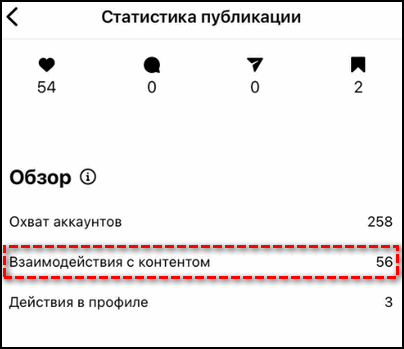
Данные отображаются по каждой отдельной публикации. В общем графе выведен показатель за все действия, которые были совершены с контентом.
Сохранили и отправили в сообщении
Отдельная и наиболее важная графа, которая отображает какое количество пользователей передали публикацию друзьям. Это значит, что пост увидели другие зрители, прочитали или посмотрели фотографии. Отображает показатель заинтересованности аудитории в контенте. То же касается и сохранений: значит потенциальная аудитория еще раз вернется к этой записи. Как посмотреть:
- Перейти к «Статистике» под публикацией.
- Появится несколько значков: в виде «флажка» (сохранения») и «самолетика» (отправили).
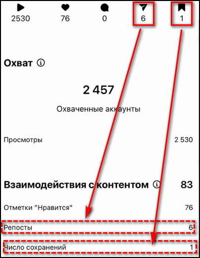
Поделиться – это не только передать в сообщении, но и опубликовать в Истории. Например, если подписчику понравилась запись и он ей поделился на свою аудиторию. В Сторис, зрителям нужно нажать по посту, чтобы перейти к полной записи.
С главной страницы и с профиля
Статистика через Ленту в Инстаграме* показывает активность своих подписчиков: те, которые уже оформили подписку на страницу. Если переход был совершен с помощью «Профиля», то значит зритель изначально перешел в аккаунт, посмотрел все записи и перешел к той, которая его наиболее заинтересовала. Варианты, почему пользователи переходят через профиль:
- кто-то отправил им ссылку на страницу;
- увидели в разделе: «Рекомендации»;
- публикация появилась в качестве рекламы.
Все эти метрики отображают потенциальных подписчиков. Если зрителю понравился контент, то в дальнейшем он может подписаться на учетную запись.
Почему недоступна статистика в Инстаграме*
Если при переходе в раздел аналитики появилось уведомление: «Статистика недоступна» или «Возникла ошибка» - это значит, что данные посмотреть не удастся. Причины, почему так происходит:
- отсутствие подключения к интернету. Если подключение нестабильно или вовсе отсутствует, то посмотреть статистику не получится;
- профиль заблокирован. Нужно проверить его активность с помощью другого устройства: компьютер, планшет, где установлен Инстаграм* или есть доступ к браузеру;
- нет обновлений для социальной сети. Пользователь не установил автоматическое обновление, поэтому новый патч не был установлен.
В основном, проблемы возникают только из-за отсутствия подключения к сети. Но если установлена модификация или отсутствуют новые версии – то статистика может также не появиться. В этом случае нужно воспользоваться официальной версией приложения и проверить подключение заново.